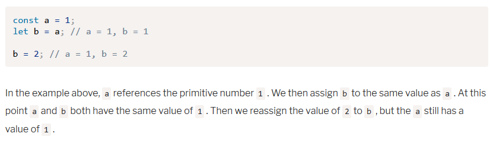
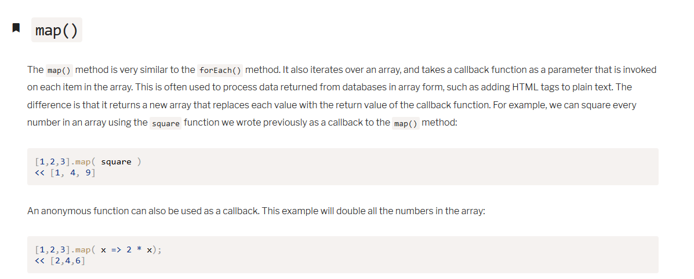

Notes Week 2
Comments, Syntax, Reserved Words
Comments:
// short comment
/*
Multiple line comments
*/
Syntax:
; to end a line
{} contain a block
Reserved words:
abstract, await, boolean, break, byte, case, catch, char, class,
const, continue, debugger, default, delete, do, double, else, enum,
export, extends, false, final, finally, float, for, function, goto,
if, implements, import, in instanceof, int, interface, let, long,
native, new, null, package, private, protected, public, return,
short, static, super, switch, synchronized, this, throw, throws,
transient, true, try, typeof, var, volatile, void, while, with,
yield
not reserved, but should be:
undefined, NaN, Infinity
Primitive data types:
Ch 2” JavaScript has seven different data types. Six of them areprimitive data typesand are listed below:
- • String
- • Symbol (The symbol primitive data type was only introduced in ES6.)
- • Number
- • Boolean
- • Undefined
- • Null
const in front of a variable makes it unchangeable const name = ‘Bob’; it wont be changed let in front of a variable allows it to be changed let name = ‘joe’; allows the variable to be used again
Scope
Global Scope can be seen outside of regular scope, not the best practice Local scope: variable defined inside a scope {} will only be available inside that scope Variable names “Constant and variable names can start with any upper or lower-case letter, an underscore, _ , or dollar character, $ . They can also contain numbers, but cannot start with them.” Use camelCaseWhenNamingVariables
Direct Assignment and Assignment By Reference:
Primitive changes change the variable directly

Non-prmitives reference the same object
Strings: characters inside’’ or “ Backslashes to escape functions

String Properties and Methods
” Primitive data types and objects have properties and methods. Properties are information about the object or value, while methods perform an action on the object or value ― either to change it or to tell us something about it.” To call a method use the . dot operator followed by the method name, and then parenthesis Template Literals Uses the backtic to ` contain strings that include ‘ or “
Symbols:
“Symbols are the only primitives that don't have a literal form. The only way to create them is to use the Symbol() function: const uniqueID = Symbol(); It is recommended to add a description of the symbol inside the parentheses: const uniqueID = Symbol('this is a unique ID'); Because symbols are primitive values, the typeof operator should return a type of 'symbol': typeof uniqueID; << 'symbol' “
SYMBOLS AND THEIR USES
Uses of Symbols on SitepointNUMBERS:
Integers or floating points Converting Numbers to Strings
PARCING NUMBERS Converts a string back to a number
parseInt() parseFloat() to a deimal
BOOLEAN
Chapter Summary ch 2
- Comments are ignored by the program, but make your program easier to read and understand
- Data types are the basic building blocks of all JavaScript programs.
- There are six primitive data types: strings, symbols, numbers, Booleans, undefined and null.
- Non-primitive data types, such as arrays, functions and objects, all have a type of 'object'.
- Variables point to values stored in memory and are declared using the const or let keywords.
- Values are assigned to variables using the = operator.
- Strings and numbers have various properties and methods that provide information about them.
- Symbols are unique, immutable values.
- Boolean values are either true or false .
- There are only seven values that are false in JavaScript and these are known as 'falsy' values.
- Data types can be converted into other data types.
- Type coercion is when JavaScript tries to convert a value into another data type in order to perform an operation.
- Logical operators can be used to check if compound statements are true or false.
- Values can be compared to see if they are equal, greater than or less than other values.
CHAPTER 3
ARRAY = ordered list of values held inside []
An empty array returns undefined
To add values to an array us = horse[1] = warmblood
Array literals are written indie the [] and don’t need to be individually assigned const
baseballTeams = [‘dodgers’, ‘angels’, ‘padres’]
Delete baseballTeams[2]; will make ‘angels’ become undefined
Values can be placed into a set using the add method:
list.add(1);
<< Set { 1 }
Multiple items can be added to the set by repeating the add() method:
list.add(2).add(3).add(4);
<< Set { 1, 2, 3, 4 }
If you try to add a value that is already
contained in the set, then the operation is simply ignored:
list.add(1); << Set { 1, 2, 3, 4}
Multiple values can be added to a set in one go by placing them inside an array that
is
provided as an argument:
const numbers=new Set([1,2,3]);
To see the contents of a set simply enter the name of the variable that refers to
it:
numbers << Set { 1, 2, 3 }
If any values are repeated in the array, then they will only appear once in the
set:
const moreNumbers=new Set([7,7,7,7,7,8,8,8,9,9]);
moreNumbers << Set {7,8,9}>br>
This gives a convenient way of eliminating any duplicate values from an
array in a single operation.
LOGIC
Chapter Summary 3
- Arrays are an ordered list of values
- Multidimensional arrays are arrays that contain other arrays
- Arrays have lots of methods that can be used to manipulate items in the array
- Sets are new in ES6 and are ordered lists of non-duplicate values
- Maps are new in ES6 and are ordered lists of key-value pairs
- We can use an if and else statement to control the flow of code
- The switch statement can be used instead of multiple if and else statements
- A while loop and do ... while loop can be used to repeat a block of code while a condition is still true
- A for loop works in a similar way to a while loop, but has a different syntax
- A for-of loop can be used to iterate over an array
- Sets and maps are enumerable, so can also be looped over using a for-of loop
FUNCTIONS
function literal = function Declaration=function is defined and named and is a block containing the code Function spelling(){ Console.log(‘spell correctly’); } function expressions This assigns and anonymous function because there is no name, but it is assigned to it’s variable. Const adios = function(){ <-no name given Console.log(‘adios amigos’); } Const adios=function bye(){ <-function named bye and assigned to variable adios Console.log(‘adios amigos’); } FUNCTION () CONSTRUCTORS Constructor=Function() Not recommended Invoking a Function=Default parameters=The golden rule to remember here is to always put default parametersafterall the other parameters. Arrow functions slim down the parameters and function. Const square=x=> x*x; Use parenthesis for multiple parameters
CALLBACKS = allow an unnamed parameter to be used in a function, just include it in the parenthesis
Map()
FILTER() METHOD
Chapter Summary ch 4